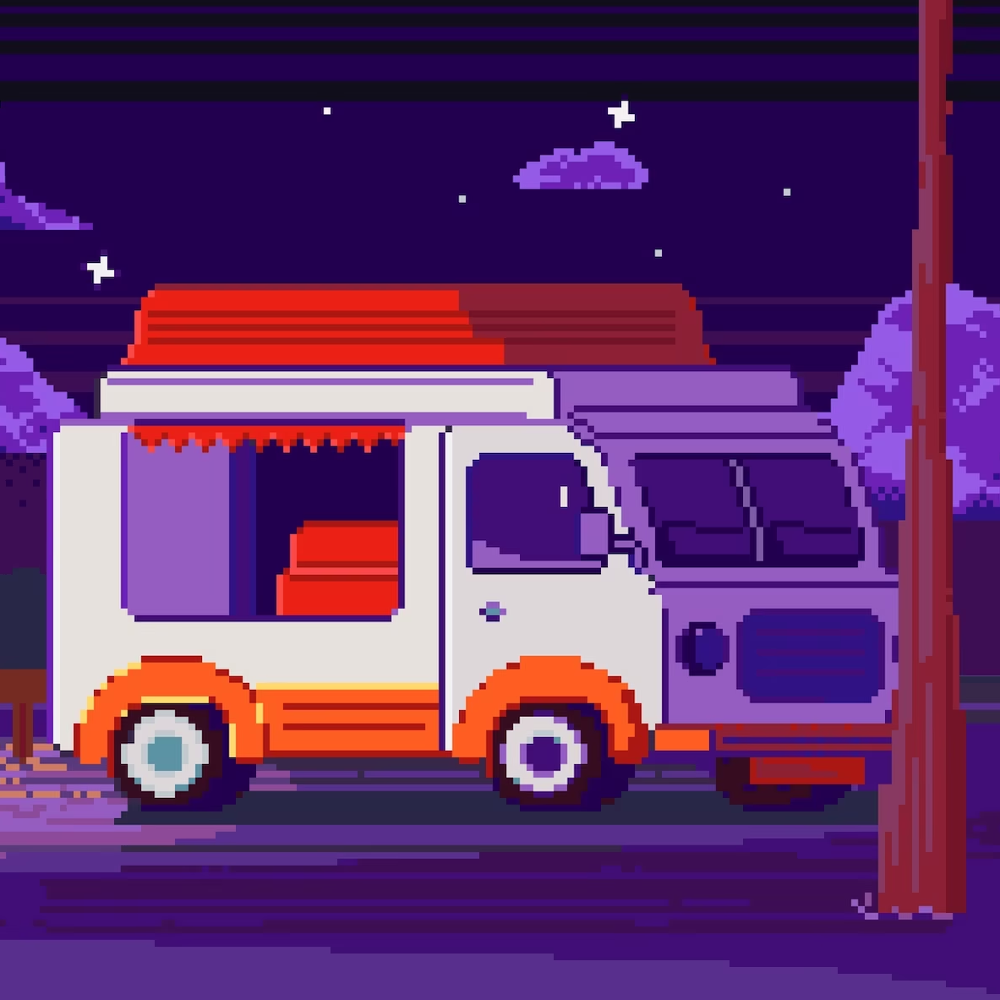

Фритрек и нулевой спринт: Подготовка к работе

Это было самое начало пути. На этом этапе важно было проникнуться основами и настроиться на учёбу. И, возможно, подумать, как новые знания могут повлиять на ваше будущее.
Была зима. Месяц - декабрь. Стаж - три года работы в тестировании приложений. Считал, что тестирование - это низкая ступень по иреархии it-профессий и поэтому решил усвоить программирование. Именно решил изучить frontend програмированние из за удобности и красоты видимости результатов твоей работы на сайтах или в приложениях. Да, конечно, backend тоже может посмореть результаты через терминалы, консоли или swagger/postman приложений, но для меня такая проверка - это путаница. До этого смотрел разные видео-обучения + сделал 1 проект с нуля в 1 курсе видео. Нет, просто переписал. Но баги в проекте сам исправлял. До курса у меня был разложенный пазл по знаниям html, css, js, react (redux, хуки, компоненты) и многих других библиотек. Не умел их складывать. Разложенный пазл из знаний и стал главной причиной приобрести данный курс. Увидел, что есть бесплатный нулевой спринт, где можно обучиться и посмотреть качество поданного материала, так плюс скидку на курс давали за прохождение спринта. Закончив спринт, я получил скидку и 30 декабря я купил себе подарок - обучение в Яндекс-практикуме. Самые лучшие подарки - это подарки, которые ты сам себе даришь. Потом немного стало страшно и появились сомнения, пройду ли курс или нет. Напомнило момент, когда в конце начальной школы я тоже подумал, что не сдам ЕГЭ. Самое страшное для меня было 1 слово - отчисление. Многие отзывы сопровождались тем, что 20-30% людей доходят до конца курса. Но с другой стороны мне было интересно, какое будет приключение. Продолжение следует...
1 спринт: Я — чистый лист
На первых этапах мы работали со страхами и сомнениями, которые часто испытывают новички. Один из них — страх перед чистым листом. Это, конечно же, намного сложнее, чем боязнь куска бумаги. Часто за этим ощущением скрываются более глубокие вопросы: с чего начать? а вдруг будет слишком сложно? что, если я не справлюсь?
И вот наступило начало обучения. Как будто 1 сентября наступило, но на данный момент был месяц январь. Меня на входе на первый урок встретил "Ёмое". Для меня было удивлением, что в путешествии по курсу у меня будет компаньон. Я первое время думал, что Ёмое - это жук, но даже сейчас не знаю, кто на самом деле Ёмое. Он или она (Пусть будет мой) отвлекал меня от всех страхов до наступления первой проектной работы. Многие темы сопровождались тренажерами и практическими заданиями для закрепления материала. Это был очень полезный опыт не только читать, но и практиковать. Наступило время первой проектной работы. Из-за имеющихся знаний, которые были до курса, я быстро стартовал. В первые дни проектной сделал коствльный сайт. Правок впереди было много. Но и проблем не меньше: позиционирование слова "Оно тебе надо", отображение заднего фона в наименовании лотов, расположение контента в секции. Но самое тяжелое, и при этом самый полезный навык - pixel perfect верстка. Это была сильная боль отобразить сайт, как на макете. Очень много было потрачено усилий и времени + 2 итерации. Но я справился с испытанием и получил зачет. Дальше-больше. Дальше-выше.
1 спринт: А если не получится?
Первый проект — позади! Но это всё ещё самое начало пути. Радость могла быстро померкнуть и смениться ожиданием провала. Или вы, наоборот, могли вдохновиться успехами и поверить в себя.
Я взодхул от облегчения. Вот мой первый собственный проект в портфолио помимо еще 1 переписанного проекта с видеокурса. Но после сдачи первой проектной открылся второй уровень для прохождения и я начал его проходить. 1 сердечко ниже и я рассказываю дальше свою историю. (Надеюсь научусь скрывать дальнейший контент без поставленных сердечек с помощью react).
2 спринт: Погоня за идеалом
На этом этапе вы уже достаточно разбирались в основах вёрстки, чтобы понять, как много ещё впереди. Вы могли попытаться погнаться за идеалом и понять, что он недостижим. А, может, вы вовсе и не подвержены перфекционизму и вместо того, чтобы сделать идеально, старались просто сделать.
Второй спринт или второй уровень. Новые материалы, новые знания, новый образ Ёмое - моего жука компаньона, который на спринт подругу нашел, но имя подруги я не запомнил. Но мне это не обязательно было запоминать ее имя, мне нужно было обучаться дальше, а не гулять с компанией Ёмое. Обучение также было не сложным до проектной работы. Ко второй проектной работе был более настроен. Задачей было сделать mvp видеохостинга. На самом деле нужно было просто взглянуть в окно - окно своих возможностей. Как и в первой проектной работе, самое сложное было сделать pixel perfect верстку. К удивлению я сдал ее со второй попытки.
2 спринт: О тех, кто рядом
Всё это время вы были не одиноки (хотя, возможно, иногда и чувствовали, что одни против целого мира). Вас окружали одногруппники, команда сопровождения и просто близкие люди, которым можно пожаловаться, если очередной макет просто так не поддавался. Осваивать что-то новое легче, когда рядом есть единомышленники, не правда ли?
Здесь больше будет рассказа о наставнике, чем о всех остальных. Мой наставником был Юрий Амбарцумян. Наставник очень понятным языком преподносил материал в воркшопах и на Q&A встречах. Помогал с наводкой для решений некоторых проблем (я пару раз только задавал вопросы в пачке, в основном сам искал решения проблемы на просторах интернета или задавал в вебинарах). Также удавалось на вебинаре в прямом эфире находить решения на распространенные проблемы в проектных работах. Все встречи с наставником давали бусты для выполнения проектных задач. Ошибки сразу исправлялись. Очень жаль, что только 20% от потока участвовало в вебинарах, но это для меня было возможностью задать вопрос по проблеме. Жаль, что Юрий от нас уходит после четвертого спринта, можно было подробнее изучить 3d анимации. Про куратора не могу ничего сказать, не было коммуникаций. Да и с 1 апреля у нас поменялся куратор. Про одногрупников могу сказать, что каждый идет своей тропой в выполнении проектной работы и может столкнуться с проблемой, с которой я не сталкивался. В некоторых вопросах я помогал, если точно был уверен, что я знал ответ на этот вопрос, но сам боялся, что мой ответ мог быть невеным и мог больше запутать моего одногрупника.
3 спринт: Обходные стратегии
На этом курсе вы постоянно решали разные задачи. В какой-то момент вам могло показаться, что решения просто иссякли. Значит, пришло время посмотреть на задачу под другим углом.
В этом спринте Ёмое снова стал маленьким, а материал сложнее. Подробная теория использования гридов, адаптивная верстка, логические свойства были сложны для понимания. Тренажерные и практические занятия также были сложные. Из за них я отвлекался и занимлся другими делами, которые расслабляли мой мозг. Бывало, что я на день забивал на изучение материала и снова приступал к изучению спринта. На за 10 дней все же дошел до третьей проектной - "Сложно сосредоточиться".
3 спринт: Когда опускаются руки
Во время учёбы часто возникает чувство, когда не знаешь, за что хвататься. Вроде и проектную пора сдавать, и задачи хочется порешать, и в теории получше разобраться, и жизнь не забыть пожить. В такие моменты очень нужна концентрация. Вспомните, откуда вы её черпали.
Начал выполнение третьей проектной. Как обычно, что-то не получалось, что-то быстро решалось, а что-то откладывалось в последний момент. Мобильная версия была быстро реализована, а вот в других разрешениях пришлось немного попотеть. Где-то неправильно сетки поставились, где-то стили лишней добавленной карточки не применялись. Но с фотографиями я реализовал гриды с свойством grid-areas. Также была Pixel Perfect верстка, к которой я уже привык, но все также была главной проблемой. Сдал со второй попытки. После сдачи было ощущение, что первая проектная работа была сложнее, чем третья. Главное, что я справился с испытанием и пошел дальше.
«Сейчас я здесь»
Сейчас вы уже очень много знаете о вёрстке. Но это только начало. Во-первых, впереди ещё много материала про «красотищу». Во-вторых, с окончанием курса учёба не заканчивается. Вёрстка — это целый мир. И этот мир постоянно меняется. Познать его полностью не получится, но это тот случай, когда важен сам процесс познания. Ведь часто путь — и есть результат.
«Сейчас я здесь» С пройденным материалом четвёртого спринта, от одного
шага к изучению JS, с готовой проектной работой на сдачу, после
реализованной анимации кнопок, переливания цвета дискеты, анимации
сердца в разных состояниях (я надеюсь, что лайк был поставлен и не
убран). И вот Вы читаете и проверяете эту работу с написанной историей
студента курса. Самое интересное в проверке - это чтение истории, чем
просто процесс проверки работы ученика. И вот уже отправляете птицу на
дальний полет и говорите про себя: "Лети в далекий путь. Но помни, что
путь только начинается". Надеюсь, что Вам понравилась моя история и Вы
начнете сообщение с результатом проверки со слов "Доброго времени
суток". Я не очень люблю писать, да из меня писатель так себе, но
здесь в 1 из пунктов для выполнения проектной нужно было написать хотя
бы пару слов. Но я написал свою историю.
Ваш Роман.